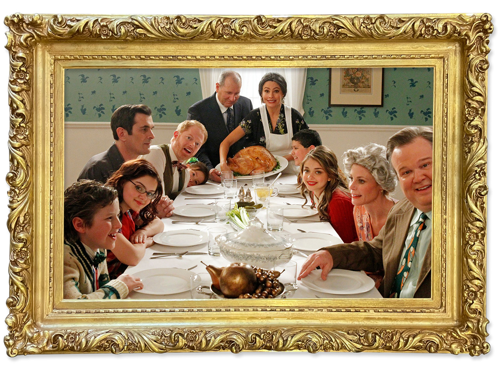
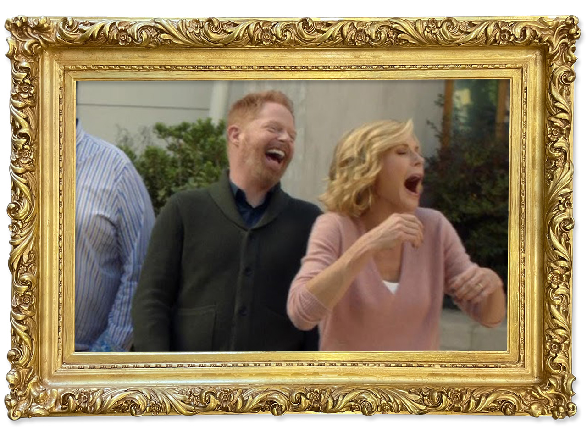
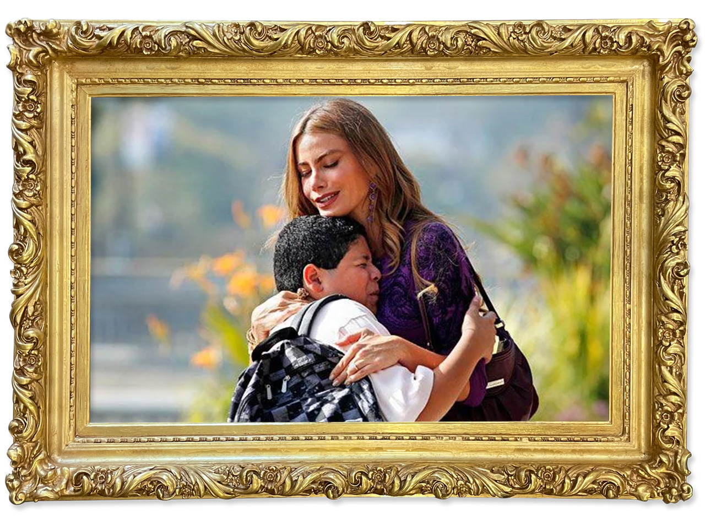
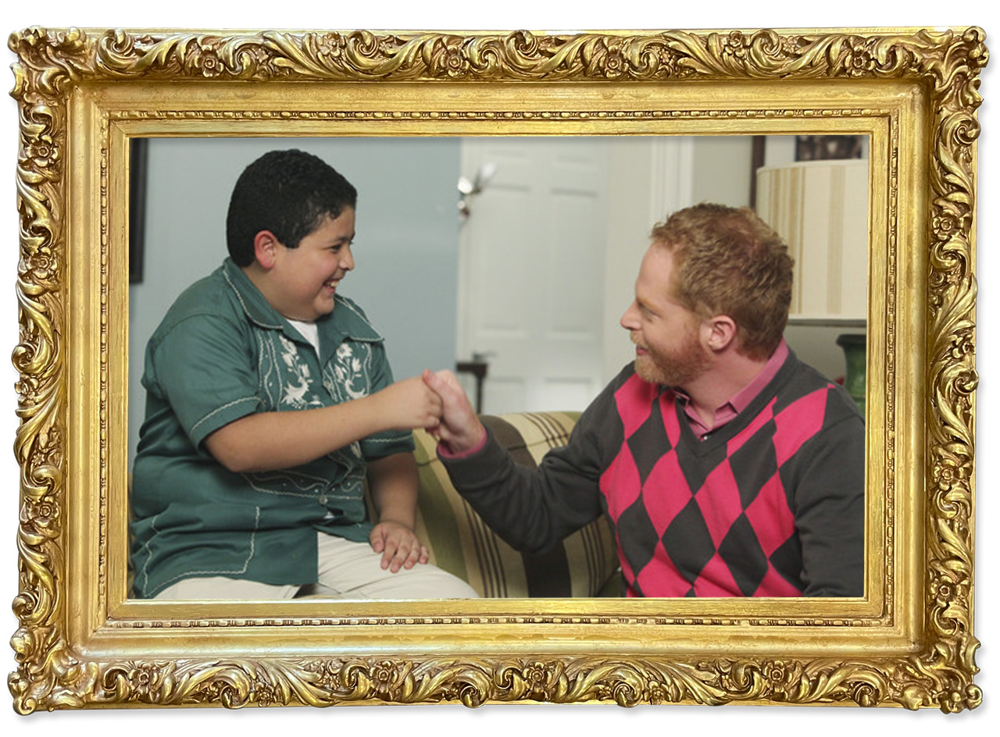

american family
Modern Family broke traditional sitcom molds by portraying diverse family structures. It showed audiences that families come in many forms– blended families, same-sex couples, multi-generational households– and that love and humor can exist in all of them. The show helped normalize LGBTQ+ parenting on network television, giving mainstream visibility to families like the Tucker-Pritchetts (Mitch and Cam).

mock-umentary
While shows like The Office and Parks and Recreation used the mockumentary format, Modern Family brought it into the family sitcom genre. Its single-camera setup, talking-head interviews, and self-aware humor created a sense of intimacy and realism, influencing a new generation of family-centered comedies. The show’s lack of a laugh track adds a realness aspect, making it seem like viewers are actually in these scenarios with them.
generational humor
The series combined clever writing with relatable family dynamics, appealing to both younger and older viewers. Its humor often stems from everyday struggles– parenting, sibling rivalry, marriage, and cultural clashes– making it both funny and reflective of modern life. Some of the jokes referencing certain races, genders, and sexualities can get a bit risky, but that only adds on to the humor style of the characters and show as a whole.

impact
By including characters like Gloria, Manny, Mitchell, Cameron, and Lily, Modern Family addressed issues of ethnicity, sexuality, and blended family life with warmth and humor. The show’s approachable portrayal of these dynamics has helped shift public conversations around diversity and inclusivity in media.

influence
The show’s 11-season run demonstrated that audiences are eager for comedies that balance heart and humor while embracing contemporary social realities. Its success paved the way for more sitcoms to explore diverse family structures and tackle real-world topics without losing comedic appeal.
